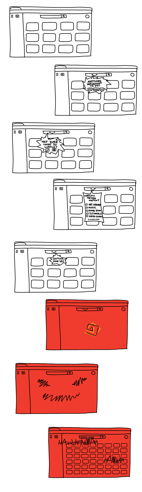

For this project, we were looking into the different ways we used the internet and what worlds were integral to us. The online space was somewhere that I connected with many different communities, and thus I developed different "personas" with each of them.
Growing up, I always enjoyed consuming content (maybe a little too much), and I was engrossed with sites such as youtube, instagram, and twitter. Sometimes, it would be hard to focus on doing work because my mind would always wander with the temptation of taking in more content.
So, I wanted to explore this direction for my avatar, visually representing it with a TV as its head. The main idea was that it wasn't a "living creature", whereas it was a machine built for endlessly consuming content. It could change channels and thus "change personas", linking back to the way that I traversed different worlds online.
I started the project out with:
I wanted this project to be more visual, so I decided to create a short animation to express the experience of temptation. So, I displayed this using youtube as a personal example, and created an "inner monologue" with my avatar as the inner voice of temptation, leading you to become trapped in endless content.
Overall, I think this project came out pretty well and I enjoyed it. At first, I was quite confused with what we were supposed to do and what the final outcome was meant to be, but I just worked through developing my concept and tried to push through the confusion. I'm not really used to doing much storytelling like this, so this was quite refreshing. Next time, I think it would be better to showcase the final scene in a clearer way, as I don't think it was too clear compared to my initial idea.